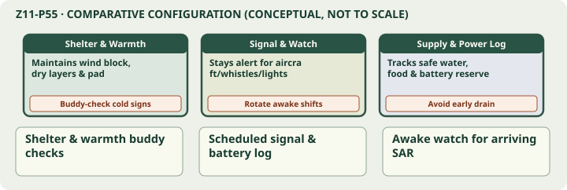

Z11-P55 · Navigation, weather and rescue · New manuscript
Organize safe group waiting roles during an overdue search delay
Keep morale steady, warmth intact and signaling continuous when rescue takes hours or overnight to arrive.
When it applies · Stranded or overdue groups waiting safely in place for search and rescue.
Equipment · Shelter/insulation, watch, whistle, light, water/food inventory and communication device.

Actions
- Assign clear rotating tasks suited to each person's ability: shelter/insulation upkeep, scheduled audio/light signaling watch, medical/warmth buddy checks and water/battery conservation log.[E11, E05, T12, ED]
- Set realistic expectations honestly—remote ground or air rescue can take many hours depending on weather, darkness and terrain—and prevent panic by keeping everyone warm, hydrated and occupied with calm routine checks.[N09, E05, T06]
- Keep one awake listener/watcher during active search windows (especially when aircraft or vehicle lights are nearby) while others rest warmly inside dry layers.[N09, E05, ED]
Failure recognition · Burning through all headlamp batteries and shouting hoarse in the first hour while ignoring shivering group members.[E02, E06, N09]
Verify · Confirm everyone has an explicit role, dry warmth protection, rationed water/power plan and continuous readiness to answer searchers.[E05, N09, T12, ED]
Stop or change course · Escalate urgency immediately via any available channel if any waiting companion develops altered alertness, severe bleeding, chest pain or advancing hypothermia/heat stroke.[T02, T03, T09]
Evidence and editorial notes
- E02 · NPS · Ten Essentials (current web edition)
- Section: Navigation; insulation; emergency shelter; emergency food and water · Conditions: Outdoor trips; adjust kit to season and route
Support: Carry essential systems including navigation, insulation, light, water and emergency shelter.
Limitations: Carrying items without practice or cold-weather verification does not ensure readiness. · Conflicting evidence: None; baseline kit system architecture.
Editorial note: Supports failure-mode packing and kit verification cards. · Specialist reviewer: Field education and search and rescue
Primary source · checked 2026-11-24 - E05 · NWS · What To Do If You're Caught in a Winter Storm (current web edition)
- Section: Outside and find shelter · Conditions: Cold, wet or windy winter conditions
Support: Block wind, stay dry and keep off cold ground. Keep exposure reduction separate from making a fire.
Limitations: Improvised windbreaks do not provide rated thermal protection or snow-load capacity. · Conflicting evidence: None; aligns with CDC-H.
Editorial note: Separates wind, ground, and moisture heat-loss pathways. · Specialist reviewer: Cold-weather shelter specialist
Primary source · checked 2026-11-24 - E06 · CDC · Preventing Hypothermia (current web edition)
- Section: Recognizing and treating hypothermia · Conditions: Cold wet exposure; signs such as confusion, slurred speech, fumbling or drowsiness
Support: Suspected hypothermia warrants prompt help and protection from further cooling. It can occur above freezing if wet or chilled.
Limitations: Early mild shivering can mask rapidly worsening judgment impairment. · Conflicting evidence: None; aligns with ARC and WMS guidance.
Editorial note: Anchors exposure-to-medical escalation thresholds. · Specialist reviewer: Wilderness medicine
Primary source · checked 2026-11-24 - E11 · NPS · Hike Smart (current web edition)
- Section: Plan your hike; Stay together · Conditions: Groups on hiking routes
Support: Choose a route suited to the group's abilities and hike at a pace that keeps the group together.
Limitations: Fast hikers moving ahead at junctions is a leading driver of preventable separation. · Conflicting evidence: None; aligns with SAR prevention principles.
Editorial note: Core reference for group accountability and pacing cards. · Specialist reviewer: Group leaders and search and rescue
Primary source · checked 2026-11-24 - N09 · NPS · Outdoor Emergency Plan (current web edition)
- Section: Outdoor Emergency Plan > Signaling, Lost-Person Protocol and SAR Handoff · Conditions: Lost or overdue party awaiting search and rescue
Support: Stay put once lost unless immediate danger requires moving to nearby safer ground; preserve footprints/clues, make visible contrast signals in open clearings, answer whistle/voice calls and stay ready for responder instructions.
Limitations: Unplanned wandering expands search radius exponentially and delays rescue contact. · Conflicting evidence: None; reinforces B014-P16, P17 and P20.
Editorial note: Core evidence for lost-person psychology, signaling and SAR coordination cards. · Specialist reviewer: Search and rescue
Primary source · checked 2026-11-24 - T02 · American Red Cross · First Aid Steps (current web edition)
- Section: First Aid Steps > Call 9-1-1 · Conditions: Lay emergency response to unresponsiveness, abnormal breathing or severe bleeding
Support: Activate EMS and get needed equipment. Follow dispatcher directions and act within training.
Limitations: Remote locations may delay EMS arrival, requiring sustained stabilization after activation. · Conflicting evidence: None; aligns with NPS-E.
Editorial note: Mandates early emergency activation and dispatcher adherence. · Specialist reviewer: EMS and wilderness medicine
Primary source · checked 2026-11-24 - T03 · CDC · Preventing Hypothermia (current web edition)
- Section: Warning signs; What to do · Conditions: Cold exposure and suspected hypothermia
Support: Confusion, slurred speech and drowsiness are warning signs. Obtain medical attention and protect from further cold.
Limitations: Shivering may stop as hypothermia worsens; absence of shivering is not reassurance. · Conflicting evidence: None; aligns with WMS cold guidelines.
Editorial note: Core neurological red-flag trigger for stopping activity and calling rescue. · Specialist reviewer: Wilderness medicine
Primary source · checked 2026-11-24 - T06 · NPS · Outdoor Emergency Plan (current web edition)
- Section: If you get lost or hurt; call for help · Conditions: Outdoor US emergency
Support: Communicate location, last known point, situation and needs. Stay put when unable to establish a safe route unless immediate danger requires movement.
Limitations: Cell signal is unreliable in backcountry terrain; pre-trip plans bridge communication gaps. · Conflicting evidence: None; core lost-person decision rule.
Editorial note: Foundation for stay/signal/move and dispatch handoff cards. · Specialist reviewer: Search and rescue
Primary source · checked 2026-11-24 - T09 · CDC NIOSH · Heat-related Illnesses (current web edition)
- Section: Heat stroke > Symptoms and First aid · Conditions: Suspected heat stroke after exertion or heat exposure
Support: Confusion, slurred speech or loss of consciousness can indicate heat stroke. Call 911 and cool the person promptly.
Limitations: Exertional heat stroke can occur even in moderate ambient temperatures during heavy effort. · Conflicting evidence: None; aligns with T05.
Editorial note: Triggers immediate emergency call and cooling stop condition. · Specialist reviewer: Emergency and wilderness medicine
Primary source · checked 2026-11-24 - T12 · FEMA / Ready.gov · Build a Kit (current web edition)
- Section: Build a Kit > Basic Disaster Supplies Kit and Maintenance · Conditions: Overnight and multi-day emergency readiness
Support: Assemble water, food, light, NOAA/battery radio, first aid, whistle, local maps, sanitation, medications, and backup power; inspect expiration dates and batteries regularly.
Limitations: Standard 72-hour kits do not cover extended multi-day isolation without replenishment or specialized cold/medical items. · Conflicting evidence: None; links kit readiness to periodic maintenance checks.
Editorial note: Supports equipment readiness, inspection, and overnight-emergency cards. · Specialist reviewer: Emergency management and field readiness
Primary source · checked 2026-11-24
Source lineage · NPS emergency plan and Ready.gov planning; new manuscript · Classification · New manuscript.